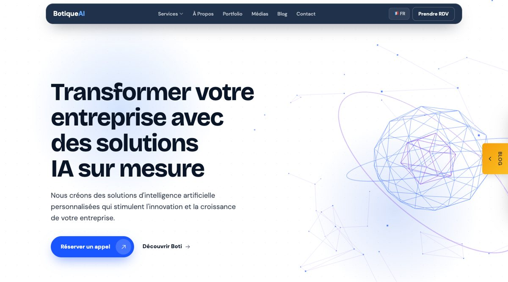

Cofondatrice
BotiqueAI, Paris
Studio de conseil en IA qui accompagne les entreprises de la stratégie IA jusqu'aux systèmes en production (agents, RAG, chatbots), avec plus de 20 clients dans plus de 10 secteurs.
Projets phares: Boti (assistants IA pour les petites entreprises) · Aria (chatbot IA pour boutiques Shopify et WordPress)
- IA agentique
- RAG
- Stratégie IA
- Chatbots